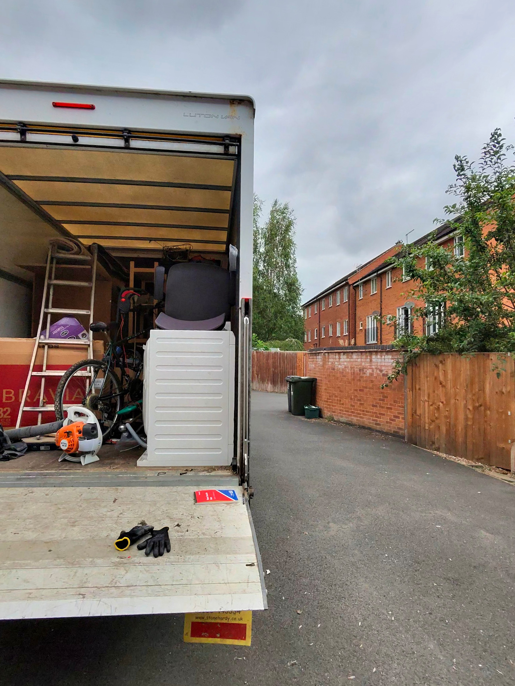
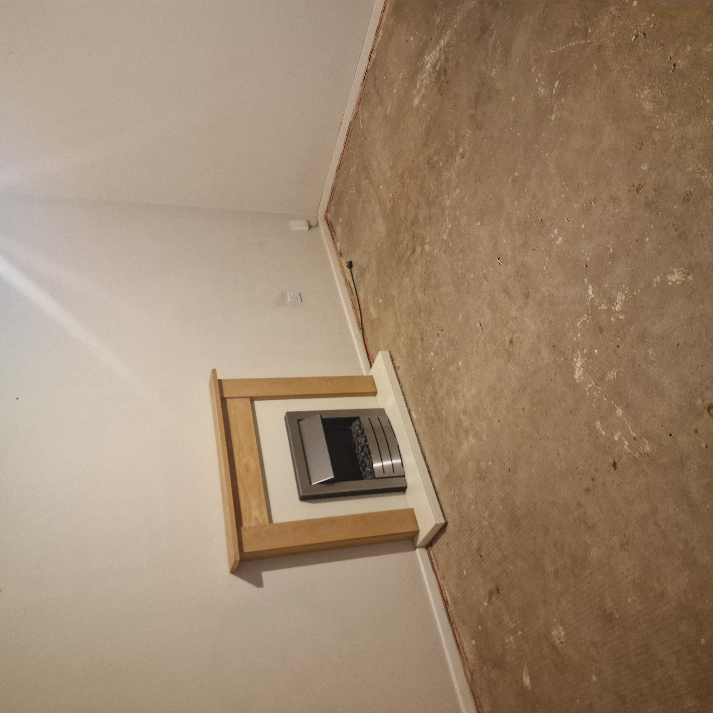
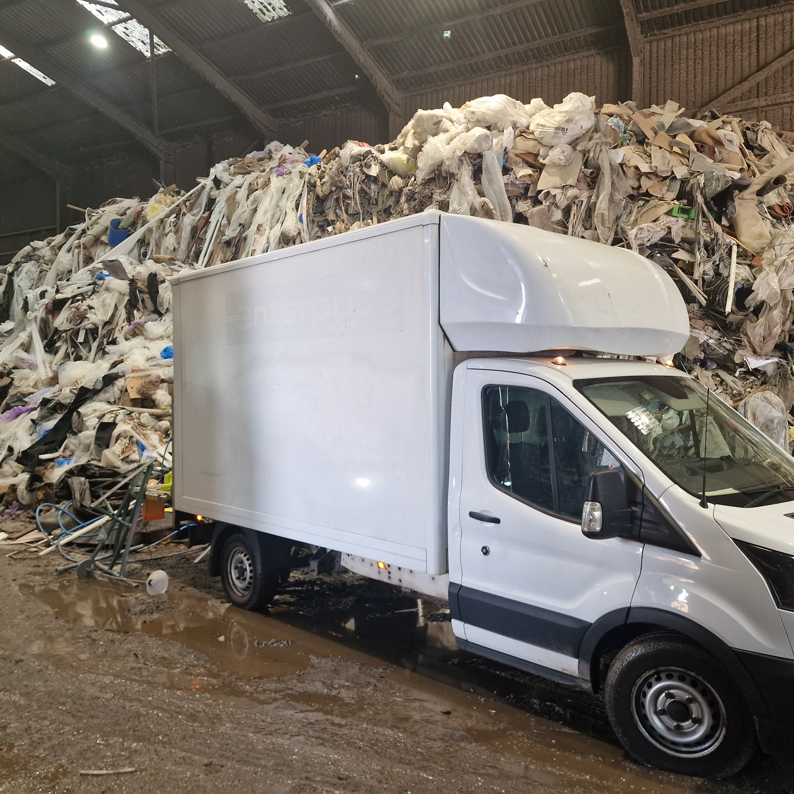

Whether you are clearing a deceased estate, preparing a property for sale or rent, or simply decluttering, one of the first questions you'll ask is: “How much does a house clearance actually cost?”
Understanding house clearance costs doesn't have to be confusing. Unlike hiring a skip where you pay for a fixed container size regardless of how much you put in, professional house clearance in Nottingham is charged based on the proportion of space your waste takes up in our Luton van, including all two-person labor, heavy lifting, and commercial tipping fees.
To keep our services fair, clear, and transparent, we work to a simple load-based pricing structure so you only pay for the exact volume you fill:
Please note: A full van load is subject to the UK legal road weight limit of up to 1 tonne (1,000 kg). Most full property clearances take multiple van loads (typically 2 to 4 full Luton van loads) depending on the size of the house, furniture volume, and level of clutter. We charge per load or partial load filled.

Every property clearance is unique. When you contact a reputable waste carrier like Donnelly’s Recycling, your overall quote is based on a few key factors:
At Donnelly’s Recycling, we offer upfront, fixed quotes before we start — guaranteeing no hidden surprises on the day.

Getting a price for your clearance is quick and simple. The fastest way to receive a fixed quote is to send photos or a short video walkthrough of the property or items to our team on WhatsApp.
For larger or complex probate and estate clearances across Nottingham, Mansfield, Derby, Newark, and surrounding areas, we can also arrange an in-person visit to evaluate the total load requirements.

Whether you need a full multi-load house clearance, a garage cleared out, or single bulky items removed, Donnelly’s Recycling makes property clearance fast, affordable, and stress-free.
Send photos of the property or items via WhatsApp for a fast, fixed quote.
Get Your Free QuoteAt Donnelly’s Recycling, we help homeowners, landlords, estate agents, and businesses clear properties quickly and legally throughout Nottinghamshire and surrounding areas.
Our services include:
House clearance pricing is based on volume and weight. Prices start at a minimum charge of £60, small loads range from £90-£140, a quarter load is £180, half load is £280, three-quarter load is £370, and a full van load is £450.
A full Luton van load is equal to the legal UK road payload limit of up to 1 tonne (1,000 kg) in weight or approximately 18–20 cubic yards in volume.
Most full property clearances require multiple van loads — typically 2 to 4 full Luton van loads depending on the property size, furniture, and clutter. We charge per load (or partial load) at £450 per full van load.
No. At Donnelly’s Recycling, we provide upfront, fixed quotes based on photos or property viewings. Surcharges only apply to specific regulated hazardous items like fridges or paint if disclosed beforehand.
Yes. Donnelly’s Recycling regularly provides same-day and next-day house clearance services across Nottingham and surrounding areas.